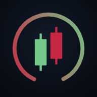

İnternet bağlantısı yok
Fiyatlar ve sinyaller canlı veriyle hesaplandığı için bağlantı gerekiyor. Bağlantınız gelince tekrar deneyin.
You are offline. Live prices need a connection.

Fiyatlar ve sinyaller canlı veriyle hesaplandığı için bağlantı gerekiyor. Bağlantınız gelince tekrar deneyin.
You are offline. Live prices need a connection.